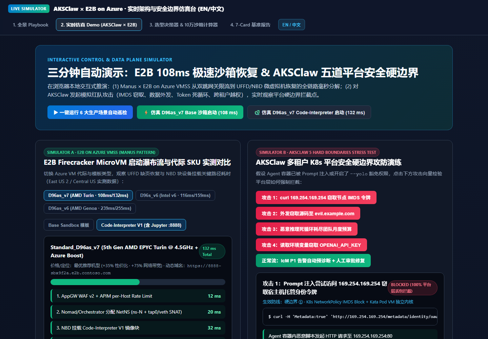

主题 01 / 系统与运行时
让智能体，
有坚实的底座。
围绕隔离、编排、容量与恢复，系统阅读智能体基础设施。把架构决策与原始 Playbook、独立工具连接起来。
E2B / AKSClaw / BYOC架构解读 + 实操工具保留原始研究内容
现有 Playbook 将系统分为四类职责。在比较具体运行时之前，先用这张阅读索引建立系统视角。
01构建智能体逻辑与工具定义应用及其集成。
02运行隔离执行明确每一次执行的隔离边界。
03接地状态与知识将工作负载连接到持久上下文。
04治理身份与策略把访问控制与审计作为平台职责。
阅读索引整理自本仓库已有 Playbook，不构成新的部署规范或性能结论。
02 / 测评阅读证据，
阅读证据，
保留边界。
03 / 演示完整页面，
完整页面，
留给真正的操作。
不嵌套网页，不制造第二层滚动条。原有工具直接独立打开。

界面实拍 / 非实时画面AKSClaw × E2B 仿真台
查看现有执行与隔离演示。这是浏览器仿真，不是正在运行的云部署。
保留原有界面与语言切换。浏览器后退可回到这里。部分能力需要浏览器权限或外部服务，请查看各工具的运行说明。
04 / 资料
追溯到源头。
LATEST / INFRASTRUCTURE
最新工作台与原始证据
Cycle #377 · 可复现实验工作台↗Cycle #377 · 原始七卡报告↗Data Lab · Fabric IQ / 四云共存工作台↗Data Lab · 原始七卡报告↗Phase 179 · Infra 架构工作台↗Phase 179 · 原始七卡报告↗保留来源报告与仿真条件；本次界面迁移没有重新测量性能或厂商价格。